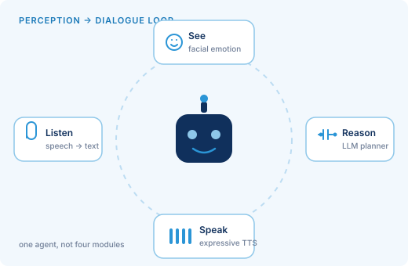
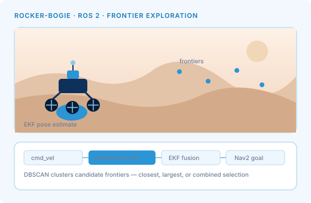
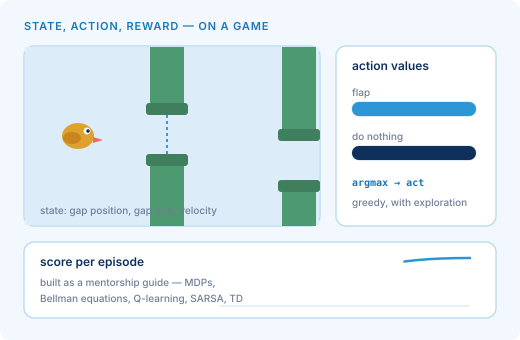

Machine learning and robotics work — research positions, course-based research projects,
and self-directed builds. Each entry has a figure showing what the system actually does, and a
link to the code where the repository is public.
Robotics & Embodied AI

Sakhi — AI Companion Robot
Technical Lead & Founding Member · IDEAS Program, IIT Bombay · 2025–present
Sakhi is an attempt to build a companion robot that behaves like one coherent agent
rather than a set of independently built modules stitched together. I work on the
perception-to-dialogue pipeline that ties speech-to-text, facial emotion detection,
LLM-based reasoning, and expressive text-to-speech into a single real-time loop, so
the robot can hold a conversation while staying responsive to who it is talking to and
how they are reacting. The hard part is not any one module — it is latency and
state shared across all four.
multimodal perceptionLLM reasoningreal-time systems
Repository not public yet — development is ongoing under the IDEAS program.
I am looking at how a robot's control policy can be built directly on learned visual
representations rather than hand-designed state estimates, aiming for decision-making
that stays robust when observations are incomplete or noisy. Alongside this, I am
exploring neuro-symbolic and hierarchical approaches that let structured task
constraints shape the learned policy over long horizons, and studying closed-loop
setups where perception and control adapt to each other instead of being trained once
and deployed separately.
visuomotor policiesneuro-symbolichierarchical RL
Repository not public yet — project in progress.

TerraROVER — Planetary Exploration Rover
Summer of Robotics · Electronics and Robotics Club, IIT Bombay · May–Jul 2026
A complete ROS 2 simulation framework for a six-wheeled rocker-bogie Mars rover, taking
the whole pipeline from velocity command to wheel-level control: a custom C++ controller
implementing Ackermann kinematics for six wheels, an extended Kalman filter fusing wheel
odometry with IMU for pose estimation, and Nav2 with a tuned pure-pursuit controller for
navigation. On top of the required work I added two exploration modes — random goal
generation, and frontier-based exploration using DBSCAN clustering with three different
frontier-selection strategies.
Makerspace Course Project · Guides: Prof. Kushal Tuekley, Prof. Siddini Venkatesh Prabhu · Spring 2024
A 500 mm quadcopter built from scratch, with Arduino-based flight control reading the
IMU and mixing pitch, roll, and yaw corrections into four motor commands. Rather than a
dedicated transmitter, a smartphone app sends setpoints over a serial link. Most of the
learning was in the gap between a controller that works on paper and one that keeps a
physical frame stable in air.
embedded controlIMU fusionArduino
No public repository — the work was hardware and firmware on the bench.
Designed and 3D-printed a combat robot in Fusion360. Most of the effort went into the
attack-and-defence mechanism and getting motor control precise enough to hold position
under impact — a bot that looks right on screen and stalls on contact loses anyway.
CADmechanism designmotor control
No public repository — CAD and hardware only.
Safe & Sequential Decision-Making

Safety in Reinforcement Learning
Research Internship, Ong's Group · Advisor: Prof. Luke Ong, Nanyang Technological University, Singapore · May–Jul 2025
This internship examined how standard reinforcement-learning algorithms hold up once
safety constraints enter the picture — specifically, how policy-gradient methods
like PPO and TRPO can be adapted to incorporate feedback from LIDAR and hazard
heuristics in continuous control. I worked inside Safety Gymnasium, a model-free
benchmark with 60-dimensional state spaces, and spent most of the time understanding
where existing safe-RL approaches break down, including how they compare against ideas
drawn from control theory.
Inter-IIT Tech Meet 14.0, IIT Patna · Problem statement by Arista Networks · top score among all IITs · Oct–Dec 2025
As part of Team IIT Bombay, I helped build a safe-RL framework for Wi-Fi radio resource
management: a multi-timescale system pairing fast interference mitigation with a slower,
Lagrangian-constrained TD3 loop that optimises transmit power and bandwidth for quality
of experience under safety constraints. The framing that mattered was making the
objective client-centric — optimising what users actually experience rather than
what the access point can report. The team's submission took the top score among all
participating IITs.
TD3Lagrangian constraintsmulti-timescale control
No public repository — competition submission held by the team.

Flappy Learner — RL from First Principles
Mentor, Seasons of Code · Web and Coding Club, IIT Bombay · May–Jul 2025
An RL agent that learns to play Flappy Bird, built as a teaching scaffold for the students
I was mentoring — MDPs, Bellman equations, Q-learning, SARSA, and TD learning, each
introduced against an environment simple enough that the effect of every design choice is
visible. Writing it also forced me to be precise about the parts of RL I had been
comfortable hand-waving through.
This project asked whether a neural network could be trained not just to control a
system, but to certify that the system stays safe. I formulated template-based closure
certificates and trained networks to learn valid certificate functions, then evaluated
the resulting safety guarantees on benchmark dynamical systems including a two-room
temperature model — essentially testing whether a learned certificate can offer the
kind of guarantee usually reserved for a hand-derived proof.
A more theoretical detour into formal methods: studying reachability and closure
properties of timed automata through region and zone graph constructions, and comparing
decidability across variants such as event-clock, updatable-timed, and one-clock automata.
The idea worth carrying forward is the quotient — an infinite state space made
checkable by collapsing it into finitely many equivalence classes.
region graphsdecidabilitymodel checking
No public repository — theory project.

AI for Logical Thinking — Automated Theorem Proving
Winter in Data Science · Analytics Club, IIT Bombay · 2025
A project on automated reasoning: starting from logic in computer science and the Logic
Theorist, moving through search-tree and heuristic-based ML methods for guiding proof
search, and ending in a theorem prover built from scratch. What makes this a learning
problem rather than a search problem is the branching factor — a prover that expands
uniformly never terminates on anything interesting, so the question becomes which rule to
try next.
Most work on improving diffusion models retrains the model. This project asks what can be
gained at inference time instead: a lightweight policy network learns to emit a per-step
guidance scale and stochasticity, trained with REINFORCE against a composite reward
combining CLIP text-image alignment, LPIPS perceptual quality, and a feature-space
diversity term. The U-Net is separately fine-tuned with LoRA, and the two are blended at
generation time. Treating the denoising trajectory as something to be controlled, rather
than a fixed schedule, is the whole idea.
Three corners of probabilistic ML in one project: implementing DDPM and D3PM diffusion
models on MNIST — continuous and discrete corruption processes side by side —
with low FID scores; optimising exact and approximate inference for factorial HMMs via
loopy belief propagation; and running Bayesian optimisation with Gaussian-process
surrogates to tune hyperparameters over a six-dimensional search space.
AI & Machine Learning · Instructor: Prof. Pushpak Bhattacharya, IIT Bombay · Apr 2025
Can a trained model be made to selectively forget? I fine-tuned additional layers with an
entropy and logit-suppression objective so performance on retained data stays intact while
the model grows measurably less confident on the data it is meant to forget. To evaluate
it, I added a binary classifier over the softmax outputs to distinguish retained from
forgotten samples, with confidence-based selective prediction — because a model that
claims to have forgotten something should not still be leaking it through its confidence.
An independent project exploring facial recognition with a Siamese network architecture
— two images through one shared encoder, with the distance between embeddings
deciding identity, rather than a fixed-class classifier. OpenCV handled preprocessing,
and YOLOv8 was evaluated alongside it as a detector and classifier for comparison.
Mentor, Winter in Data Science · Analytics Club, IIT Bombay · Dec 2024–Jan 2025
I mentored a group of undergraduates building a face-mask detector, guiding them through
an OpenCV and CNN pipeline and the real-time video-stream processing that makes detection
work live rather than on static images. The gap between the two is where most of the
engineering actually sits — a model that is accurate but cannot keep up with the
frame rate is not a detector.
AI & Machine Learning · Instructor: Prof. Pushpak Bhattacharya, IIT Bombay · Jan–Apr 2025
A hidden Markov model part-of-speech tagger trained on the Brown Corpus, with Laplace
smoothing and 5-fold cross-validation for stability, and the Viterbi algorithm decoding
the most likely tag sequence at inference. The useful intuition here is that the label is
never observed — only the word it produced.
HMMsViterbi decodingNLP
No public repository — course project.

Sudoku Solver using Machine Learning
Winter in Data Science · Web and Coding Club, IIT Bombay · Dec 2024–Jan 2025
An end-to-end pipeline that reads a photographed Sudoku grid, classifies the digits with a
CNN trained on MNIST — despite the noise OpenCV introduces during grid extraction,
which is a meaningful distribution shift from clean MNIST — and solves the puzzle
with A*-guided backtracking.
CNNscomputer visionheuristic search
No public repository — project files not published.
ML for Quantitative Research

Double XGBoost — Depth-Wise Boosting
Research problem statement, Juspay · Mumbai · Dec 2025–Jan 2026 · in progress toward publication
This started as an open research question at Juspay: whether a boosted-tree model could
gain expressivity by going deeper rather than simply adding more trees. I proposed Double
XGBoost, which introduces depth-wise boosting, and derived a second-order optimisation
formulation via Taylor expansion so that node-level predictors could be trained in closed
form. Early results show faster convergence and improved accuracy from the
residual-correction step.
A system that detects market regimes — bull, bear, crisis — with a three-state
Gaussian HMM fitted on rolling return, volatility, and momentum features, then rebalances
a multi-asset portfolio to match the regime instead of holding one allocation through
crashes and recoveries alike. Allocation is solved as a mean-variance problem in CVXPY
with regime-specific risk aversion, validated walk-forward with no lookahead and
transaction costs deducted on turnover, against 60/40 and equal-weight benchmarks.